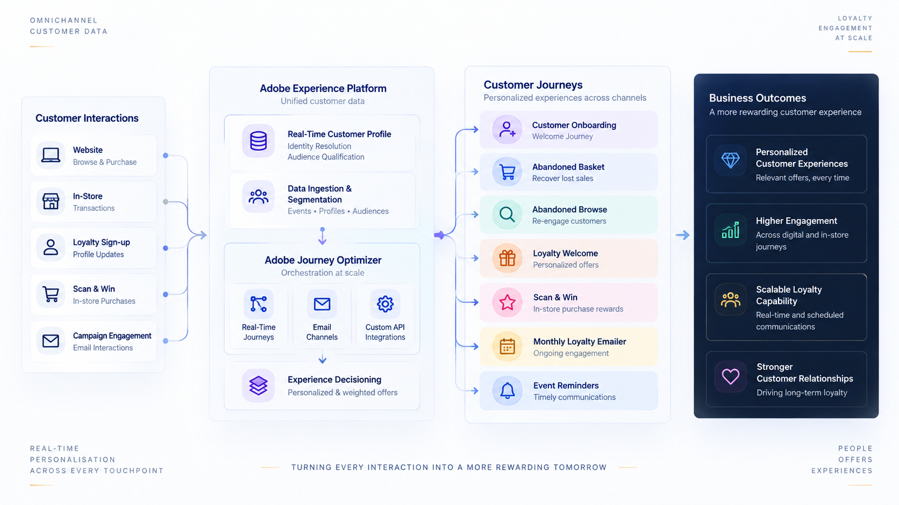
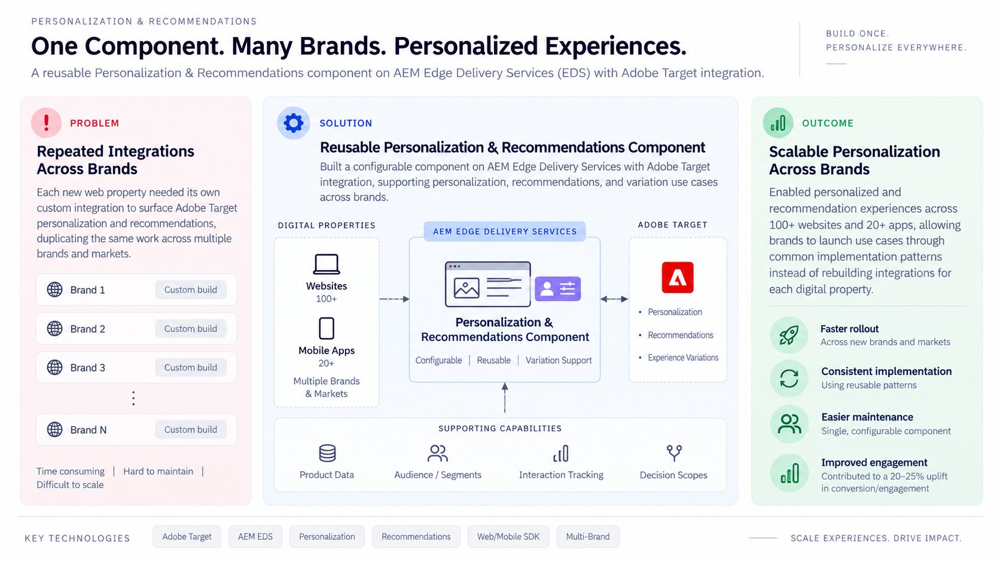

Technical Consultant at Adobe — based in Bengaluru, India
I turn customer data into personalized experiences that adapt in real time.
I build scalable personalization solutions grounded in customer data — connecting journeys, experimentation, recommendations and applied AI across enterprise MarTech platforms.
Selected work
All projectsMCP-Connected Marketing Assistants
Technical Consultant, Adobe · 2025–Present
Built MCP integrations connecting AJO, AEP, CJA, and Adobe Target with Claude, ChatGPT, and Adobe Coworker, including an internal email-optimization solution that reduced email size by 35–40% on migration projects and enabled natural-language interaction with marketing platforms.

Retail Loyalty & Customer Engagement Transformation
Technical Consultant, Adobe · 2026–Present
Designed and implemented an AEP and AJO–based loyalty and customer engagement solution spanning real-time journeys, audience and identity logic, custom API integrations, consent-aware communications, and Experience Decisioning for personalized offers across digital and in-store interactions.

Scalable Multi-Brand Personalization & Recommendations
Technical Consultant, Adobe · 2024–2025
Designed and implemented a reusable Adobe Target personalization and recommendations architecture across 100+ websites and 20+ mobile apps, combining standardized web/mobile integrations with an AEM Edge Delivery Services component to scale experimentation, personalization, and recommendations across brands and markets.
About
I work at the intersection of customer data, personalization and applied AI — turning complex use cases into scalable solutions.
I'm Swapnadeep Sarkar, a Technical Consultant at Adobe working across enterprise MarTech and customer experience platforms. I design customer-data foundations, audiences and omnichannel journeys; implement analytics and measurement; and deliver experimentation, personalization, recommendations and decisioning across channels.
I hold an M.Tech in Artificial Intelligence and Machine Learning from BITS Pilani, completed while working full-time, and a B.Tech in Electronics and Communication Engineering from VIT. My recent work focuses on applied AI — building MCP integrations and reusable skills that connect LLMs to MarTech data and workflows, simplify complex processes and support better strategic decisions.
Focus
Data-driven personalization, scalable solution design, journey orchestration, experimentation, recommendations and applied AI/ML.
Currently
Building MCP integrations and reusable AI skills that simplify MarTech workflows, surface insights and support personalization strategy and execution — see the now page for specifics.
Experience
Full historyJul 2022 — Present
Adobe
Technical Consultant — MarTech & Customer Experience Platforms
Jun 2020 — Sep 2020
IIY Software
UI/UX Design & Web Development Intern
Writing
All postsGet in touch